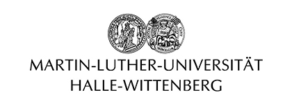
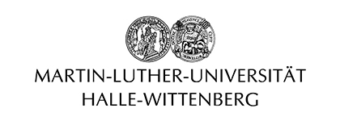

19–21 February 2023
Israel
Israel
In recent decades, the rich cultural heritage of the Near East is undergoing a digital revolution. Comprehensive online repositories have made the digital publishing of artefacts in 2D images, interactive 3D models, as well as text editions, a more sustainable common practice. Furthermore, computational analyses of ancient Near Eastern artefacts, texts and art, are starting to become more prevalent, applying quantitative analyses, natural language processing (NLP) or machine learning (ML), to answer questions about these complex ancient civilizations.
The conference, Computational Perspectives on Ancient Near Eastern Literature, Art and Material Culture, aims to establish a professional network for Digital Ancient Near Eastern Studies (DANES). This will consolidate the successes of recent initiatives led by different research centres, and discuss how best to integrate computational approaches and digital humanities research for ancient Near Eastern texts, art and artefacts. Lastly, we will Incorporate into these discussions a critical perspective on the use of computational methods for text analysis, as well the visual analysis of ancient Near Eastern objects. This conference will include invited long and short talks, an in retrospect section, and poster presentations.
Registration for speakers is open. Please register in the following link with
We invites students and scholars to present their original research as a poster in the conference, either remotely or in person, on the application of one or more of the methodologies and issues mentioned above. We ask you to submit
☐ Submission deadline for Speakers: December 1, 2022.
The conference will be held at the Center for Artificial Intelligence & Data Science (TAD) at Tel Aviv University and the School of Computer Science and Engineering, Hebrew University of Jerusalem between 19-21 February 2023. The final roundtable session will be held at the Digital Pasts Lab, Ariel University. Shuttle services will be provided to the different venues.
 
